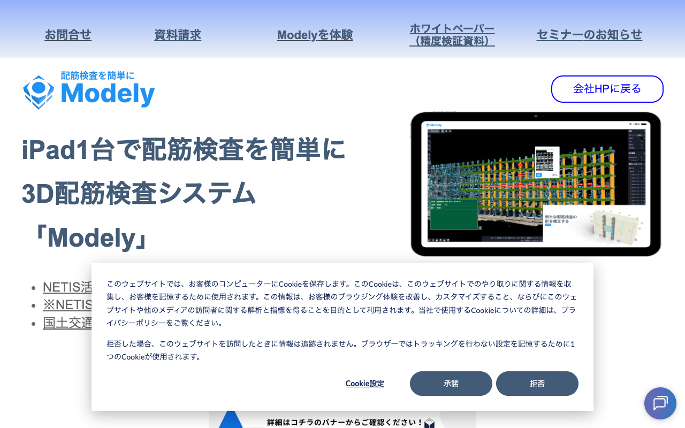

概要
- スマートフォンまたはタブレットを鉄筋にかざすだけで、3Dスキャンにより自動計測
- 鉄筋の径（D10, D13等）、本数、ピッチ（間隔）を自動で読み取り
- 計測値を設計図の値と自動照合し、OK/NG判定を即座に表示
- 従来の巻尺＋手書き記録と比較して、80%の省力化を実現
- NETIS-VE登録（活用促進技術）。工事成績評定で加点対象
製品画面：Modely

出典: https://modely.datalabs.jp/
従来の配筋検査 |
3D配筋検査 |
|
|---|---|---|
計測方法 |
巻尺で手作業 |
スマホ3Dスキャン |
記録方法 |
手書きメモ→転記 |
自動記録・自動保存 |
所要時間 |
- |
従来比80%削減 |
評定加点 |
なし |
NETIS-VE（加点対象） |